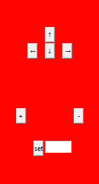
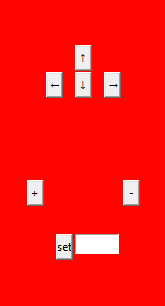

Code & Results
I made multiple iterations of this program. One for each RGB channel in case you wanted images in just red (as seen in this site's icon), green, blue, or white. There is also an "RGB" version which combines the three primary colors together, creating images with a wider spectrum of colors. I also made an "animate" version which allows animations to be created.
Image Generation
This is the code for the RGB version of the program which uses the "tkinter" library for drawing to the screen, "pillow" to save the final image, "numpy" to more efficiently handle large multi-dimensional arrays, and "numba" for running code on the GPU (NVIDIA graphics card with CUDA support required).
The following images show photos generated by the:
- Blue
- Red
- RGB (1)
- RGB (2)
The program provides the user with on-screen controls to zoom and navigate.
 

The arrow key buttons pan the camera, the plus and minus buttons zoom in and out respectively, and the "set" button sets the number of iterations to be that entered in the textbox. More iterations give an image with more detail (so you can zoom in more), but it takes longer to render the image.